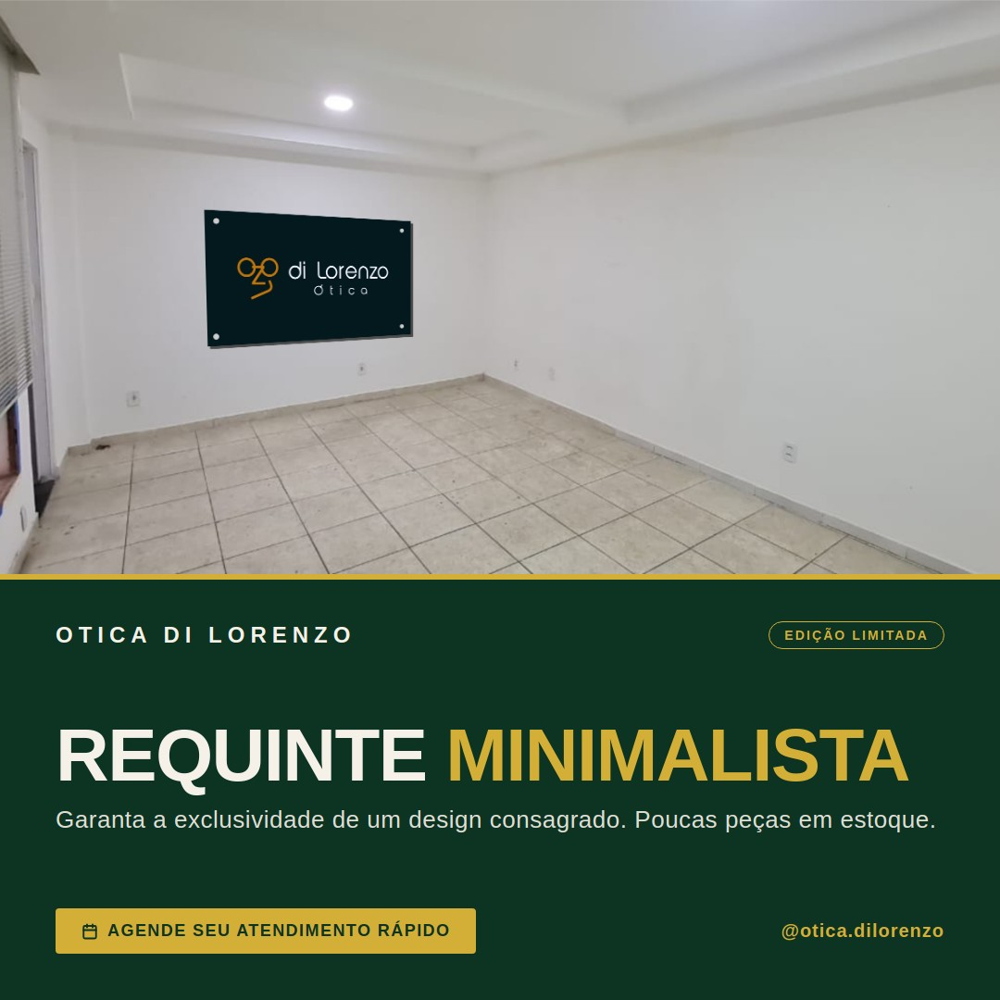

2026-06-20
tendencia_minimalistaurgente
Menos é mais, e a busca pela elegância sutil nunca esteve tão em alta. Nossa curadoria de óculos minimalistas — que une leveza, sofisticação e o máximo conforto visual — está com altíssima procura. ✨ Se você valoriza o design atemporal e quer garantir sua peça antes que o estoque desta coleção exclusiva se esgote, o momento é agora. O agendamento da sua visita é simples e rápido. Esperamos você.
→ Agende seu atendimento personalizado